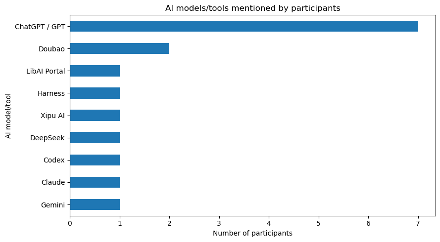
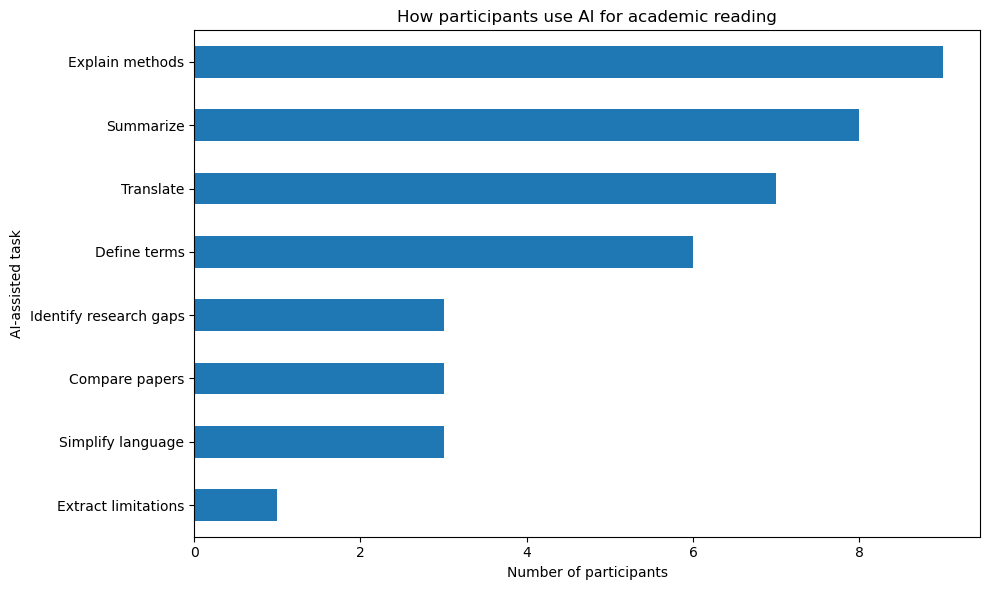
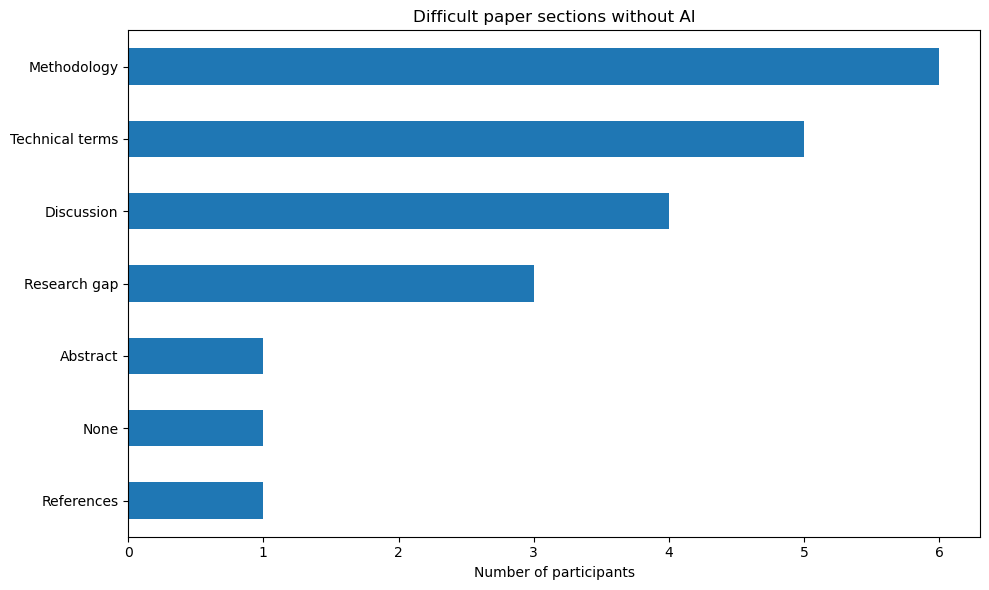
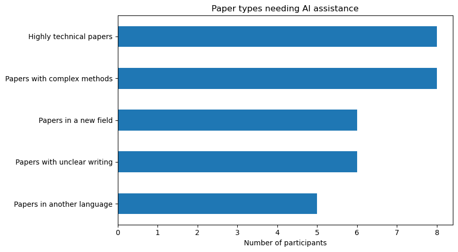
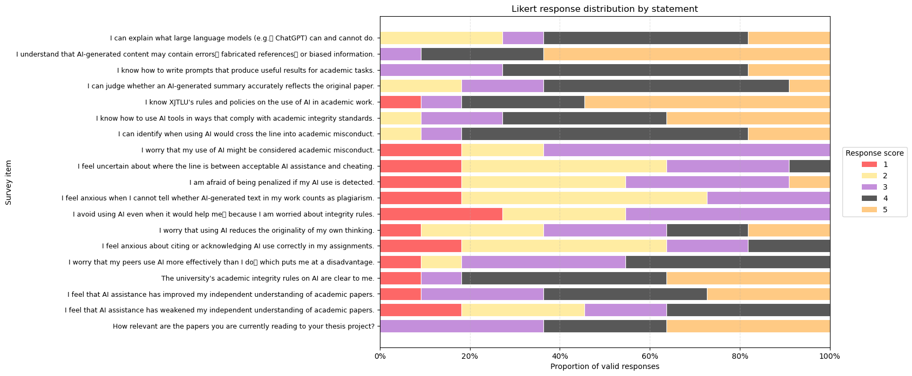
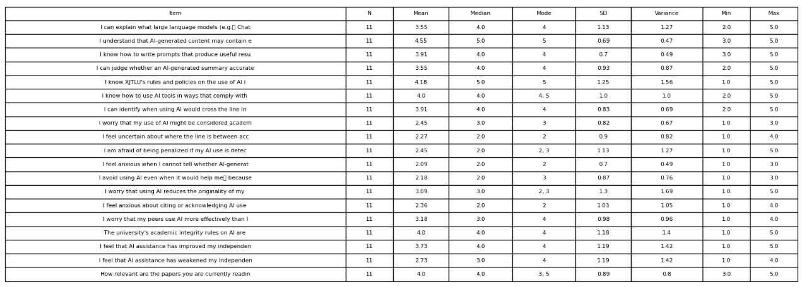
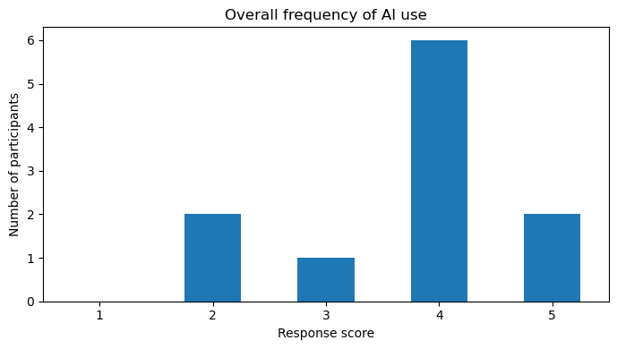

Evaluation Method and Results
Statistical methods used to evaluate the collected survey data and task data.
Survey Evaluation Method
This study employed a mixed-methods, cross-sectional survey design to investigate how XJTLU postgraduate students use AI tools in their academic work. The evaluation focused on four core dimensions: (1) the frequency and types of AI tools used, (2) the specific tasks students delegate to AI during academic reading, (3) their self-reported AI literacy and academic integrity anxiety, and (4) their perceived effects of AI on independent comprehension.
Data Collection and Processing
Data was collected via an online questionnaire comprising Likert-scale items, multiple-response questions, and open-ended prompts. Raw responses were exported as a structured CSV dataset and processed using Jupyter Notebook with Python, utilizing pandas for data manipulation and NumPy for numerical operations. The cleaning pipeline involved filtering ineligible responses, handling missing values, and standardizing bilingual column headers.
A custom Python script was developed to parse Likert-scale labels (e.g., mapping A.Never through E.Almost every time to ordinal scores 1–5). Free-text responses regarding AI tool usage were normalized using an editable alias dictionary to group variants (e.g., matching "GPT" and "ChatGPT" under a single model category) before generating frequency distributions and descriptive statistics.
Analytical Strategy
Descriptive statistics (counts, percentages, means, medians, and standard deviations) were generated for all quantitative items. Multi-response questions (e.g., tasks performed with AI, difficult paper sections) were analyzed by calculating the proportion of participants selecting each option. To assess the relationship between opposing perceptions of AI's impact, a reverse-scored item (Q50: "AI weakened my independent understanding") was computed and correlated with its positive counterpart (Q49) using Spearman's rank correlation. All resulting tables and charts were exported as CSVs for reporting.
Brief Survey Results Overview
Analysis of the current dataset (N = 11) reveals several distinct patterns in AI usage and perception among the surveyed postgraduate students:

AI Tool Preference: ChatGPT / GPT was the dominant tool, mentioned by 63.6% of participants (n = 7). Doubao followed at 18.2% (n = 2), while Claude, Gemini, DeepSeek, and institutional tools like Xipu AI were each mentioned by a single participant (9.1%).

Primary Use Cases: Students primarily use AI to explain research methods (81.8%, n = 9) and summarize papers (72.7%, n = 8). Translation (63.6%) and defining terms (54.5%) were also highly cited, whereas extracting limitations was the least common task (9.1%).


Reading Challenges: When reading without AI, participants found Methodology (54.5%) and Technical Terms (45.5%) the most difficult sections. Consequently, 72.7% felt that highly technical papers and those with complex methods most required AI assistance.


Perceived Impact and Calibration: Participants generally felt AI improved their independent understanding (Mean = 3.73 on a 5-point scale). However, when asked if AI weakened their understanding, the mean was 2.73. After reverse-scoring the negative item, a strong positive Spearman correlation (r = 0.828) emerged between the two items, indicating that students who perceive benefits from AI are also acutely aware of its potential to undermine their independent thinking.

Frequency of Use: The sample reported high overall AI usage in academic work (Median = 4.0, "Often"), with 72.7% of participants selecting "Often" or "Almost every time."
Note: Given the small sample size (N = 11), these findings are descriptive and should not be generalized to the broader student population. They serve as an initial baseline for understanding student workflows and perceptions.